01 Tarde
La ceremonia
Arcos de flores, pasto verde y luz dorada. Un escenario natural para decir «sí» frente a quienes más quieres.
Quiero mi evento así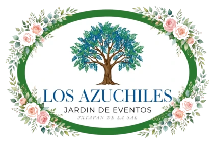
Encendiendo las luces del jardín
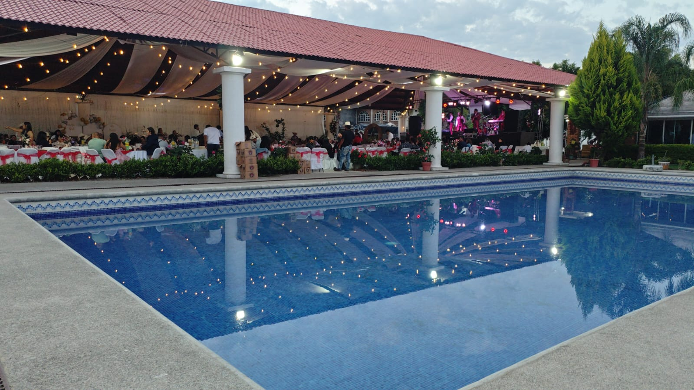
Jardín de eventosIxtapan de la Sal
Bodas, XV años y celebraciones de empresa en un jardín con palapa de luces cálidas, alberca y mobiliario vintage. Nosotros armamos el montaje; tú solo llegas a celebrar.
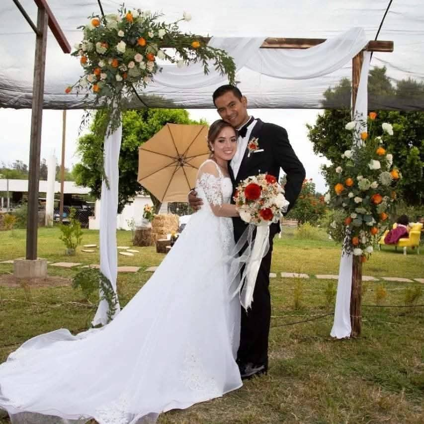
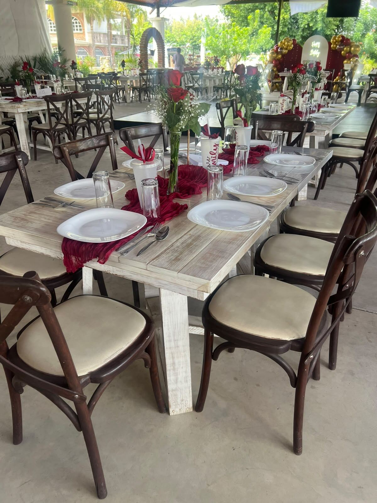
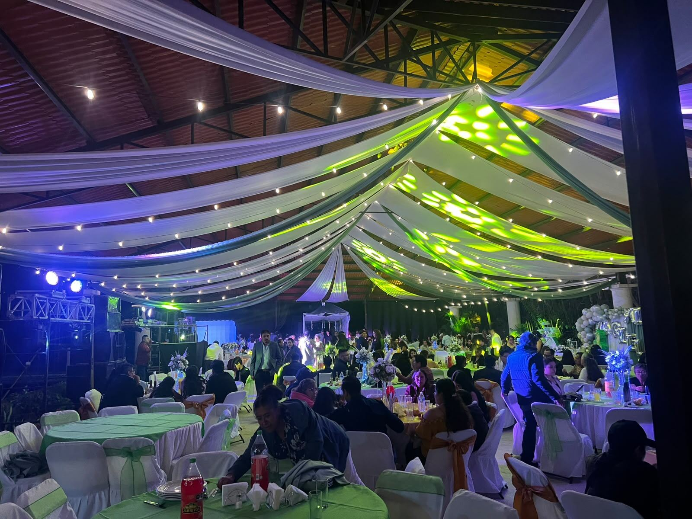
El jardín
Este jardín nació del cariño de la gente por el lugar: nos pedían celebrar aquí y hoy es, por completo, un espacio para eventos. Un espacio en donde los momentos especiales se convierten en recuerdos inolvidables.
Jardín, palapa de teja y alberca: un entorno natural que se luce solo en cada foto.
Mobiliario y montaje listos para el estilo que imaginas: vintage, Tiffany, clásico o tropical.
Meseros y maestro de ceremonias para que todo fluya sin que tengas que estar pendiente.
Un jardín, tres momentos
01 Tarde
Arcos de flores, pasto verde y luz dorada. Un escenario natural para decir «sí» frente a quienes más quieres.
Quiero mi evento así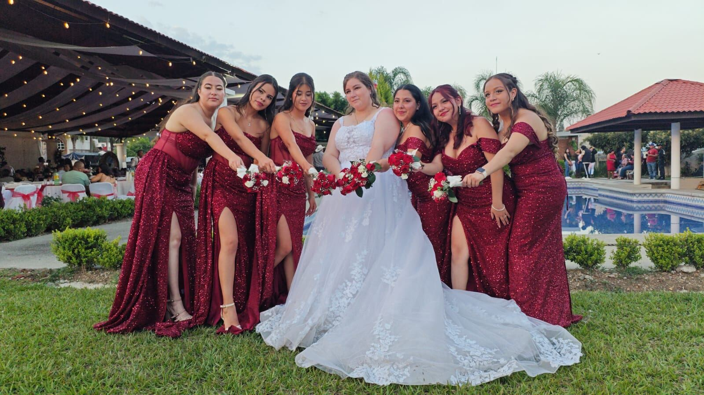
02 Atardecer
Baja el sol y se encienden los focos cálidos bajo la palapa. Es la hora de las fotos, los brindis y las mesas listas para recibir a todos.
Quiero ver el jardín al atardecer03 Noche
Música, telas, luces de colores y pista libre. El jardín cambia de piel cuando cae la noche, y no vas a querer que termine.
Quiero mi fiesta aquíLo que ofrecemos
Desde el espacio hasta el último detalle de la mesa. Tú eliges el estilo; nosotros lo hacemos realidad.
Espacio abierto para ceremonia, banquete y baile, con palapa de teja, áreas verdes y luz cálida cuando cae la tarde.
Quiero reservar el jardínMesas vintage, sillas crossback, mesas cuadradas y redondas para silla Tiffany, y mesas redondas con silla de plástico forrada con monja y moño.
Ver estilos de montajeDiferentes tipos de montaje para bodas, XV años, eventos de empresa y más. Platícanos tu idea y la armamos.
Cuéntanos tu ideaAtención en mesa para que tus invitados se sientan consentidos y tú no tengas que estar pendiente de nada.
Quiero meseros en mi eventoQuien lleva el ritmo del evento: presentaciones, brindis, baile y todos los momentos que no pueden fallar.
Quiero a alguien que lleve el ritmoBanquete servido en los tiempos que tu evento requiera, para que cada momento llegue a la mesa cuando debe.
Quiero cotizar el banqueteSi tu evento tiene una temática especial, platícanosla y la llevamos al montaje.
Cuéntanos tu temáticaOtros servicios para armar tu celebración completa, y más según lo que necesites.
Pregunta por estos servicios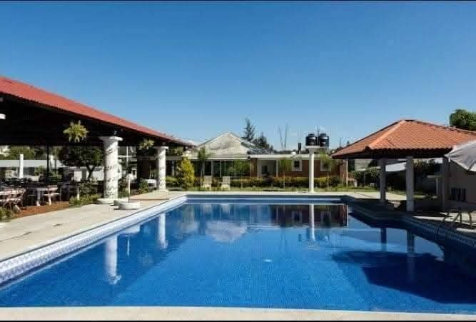
Un plus para que la fiesta no se quede solo en la pista: agua, jardín y rincones para respirar entre brindis y baile.
Quiero conocer la albercaEstilos de montaje
Mesas de madera y sillas crossback: calidez, textura y mucha fotografía.
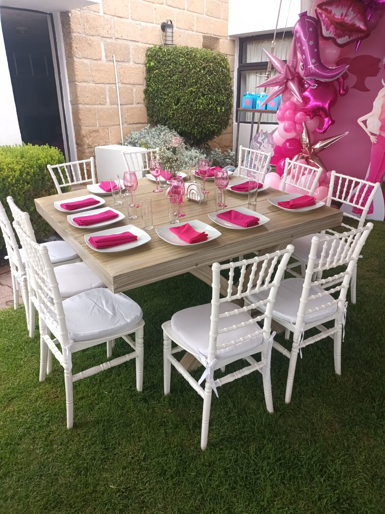
Mesa cuadrada o redonda con silla Tiffany. Elegante, y se viste con la paleta que tú elijas.
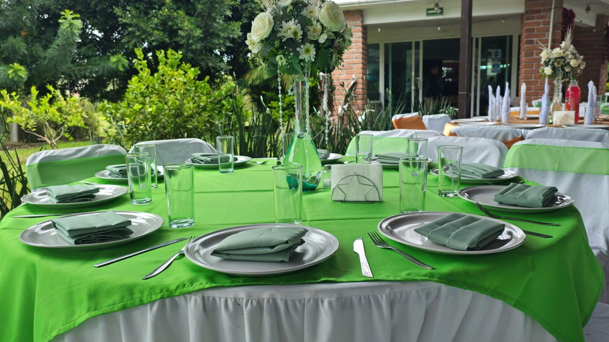
Mesas redondas con mantel de color y silla forrada con moño: clásico, alegre y muy de jardín.
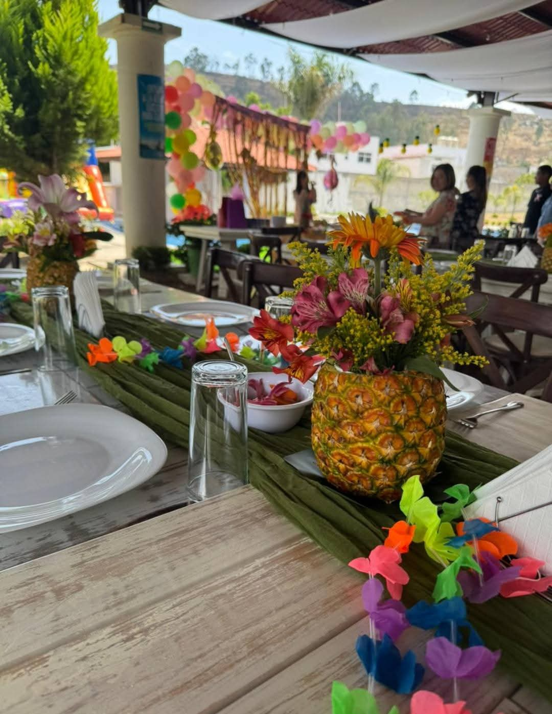
Flores en piña, colores vivos y ganas de fiesta para tardes de alberca.
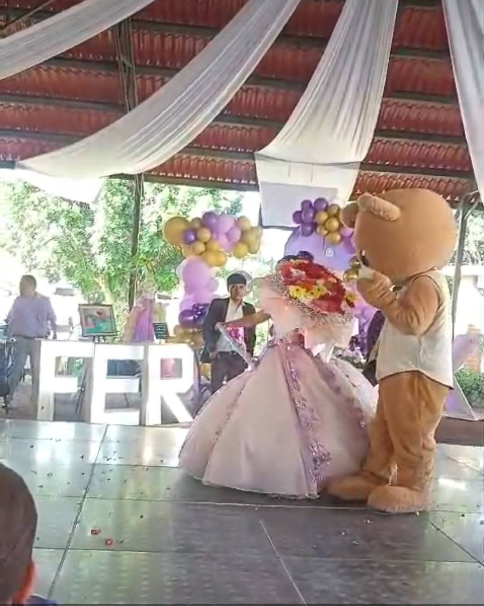
Escenario, globos, letras y una entrada inolvidable bajo la palapa.
Cuéntanosla. Armamos tu montaje con el mobiliario que tenemos y lo ajustamos a lo que necesitas.
Cuéntanos tu ideaLoza y mesa servida
Te cotizamos tu celebración con el montaje que más te guste. Toca cualquiera para verlo en grande.
Quiero cotizar mi montajeMomentos reales
Fotos de montajes y celebraciones de Los Azuchiles. Toca cualquiera para verla en grande.
Cómo trabajamos
Sin trámites eternos: platicamos, conoces el jardín, eliges y celebras.
Quiero empezar hoyDinos qué tipo de evento tienes en mente, la fecha que imaginas y cuántos invitados esperas.
Agenda una cita y te lo mostramos en persona. Sábados y domingos estamos en el jardín de 11:00 a 18:00.
Escoge el mobiliario, el estilo de mesa, los meseros y el maestro de ceremonias que necesitas y platicamos tu presupuesto.
Nosotros nos encargamos del montaje. Tú solo llegas, brindas y disfrutas.
Ven a conocernos
Agenda tu cita el día que prefieras para recorrerlo. Sábados y domingos estamos en el jardín de 11:00 a 18:00.
Ixtapan de la Sal, Estado de México.
Código de ubicación
De 8:00 a 20:00.
Sábados y domingos de 11:00 a 18:00. Otros días, con cita previa.
Contamos con un área amplia de estacionamiento.
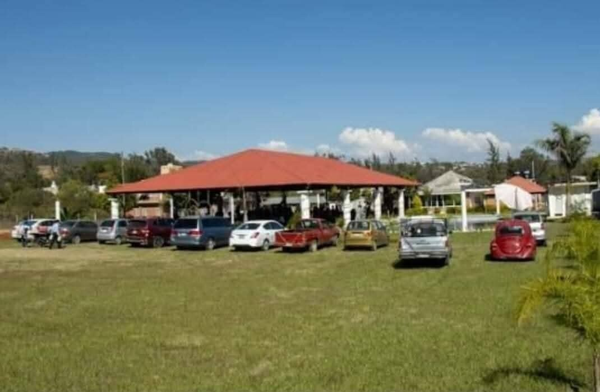
Apartemos tu fecha
Llena estos datos y armamos tu solicitud. Sin compromiso: primero platicamos, conoces el jardín y después decides.
Al enviar, se abre WhatsApp con tu mensaje listo para mandarlo.